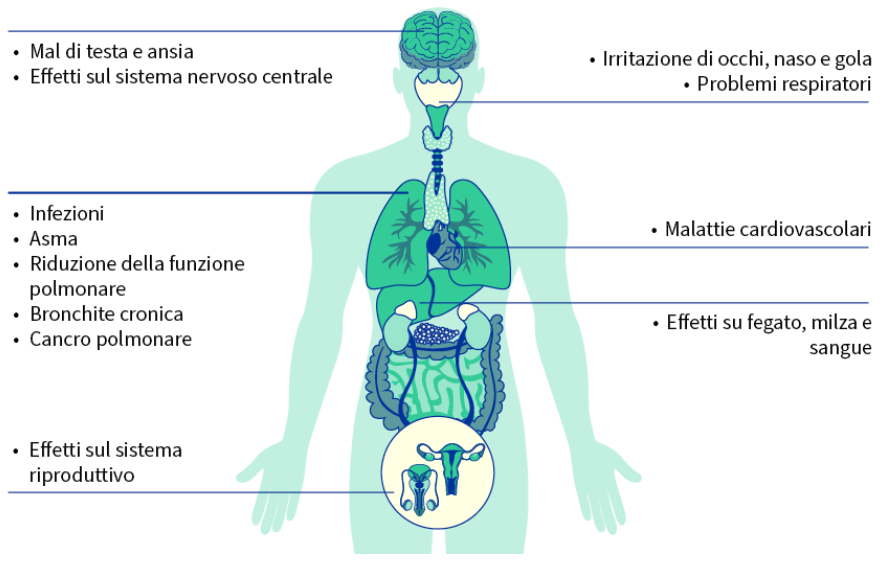
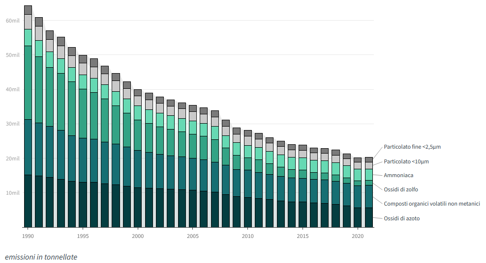
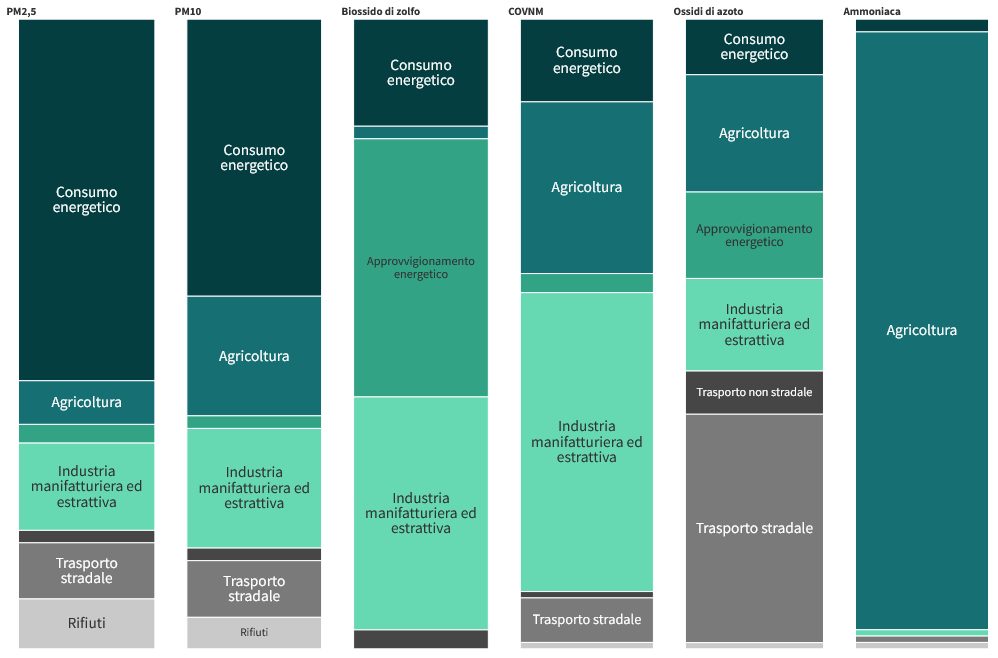
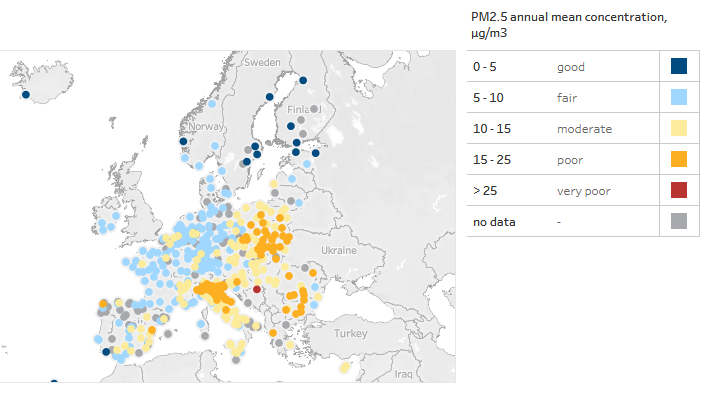

Dati Statistici
Ecco alcuni grafici con alcuni dati sull'inquinamento ambientale. Per maggiori informazioni e per dati aggiornati si può consultare il sito ufficale citato nella fonte.
Tra i principali inquinanti figurano:
particolato
ammoniaca
metano
ozono
ossidi di azoto
biossido di zolfo
composti organici volatili non metanici
Ciascuno di essi è di per sé nocivo e alcuni possono persino reagire tra loro attraverso processi chimici e diventare particolato od ozono.
Cause sul fisico

Emissioni inquinanti del'ultimo anno

Fonte: Agenzia europea dell'ambiente (AEA)
Fonti di inquinanti atmosferici

Fonte: Agenzia europea dell'ambiente (AEA)
Qualità dell'aria in Europa

Fonte: Agenzia europea dell'ambiente (AEA)
Dati raccolti e graficati dall'UE.